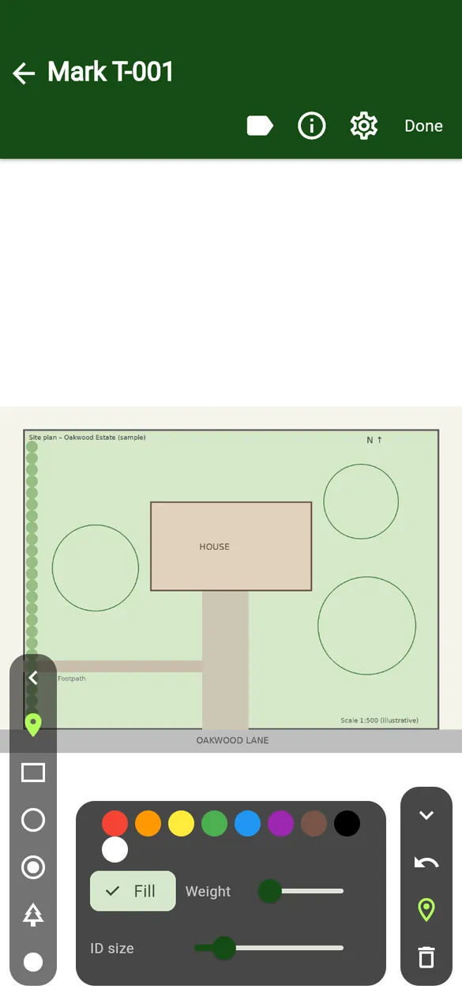
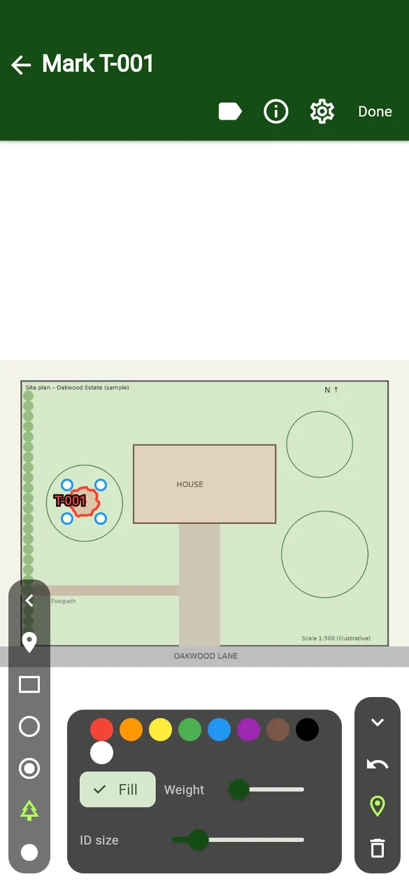
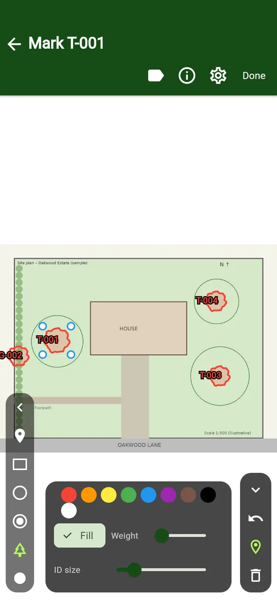
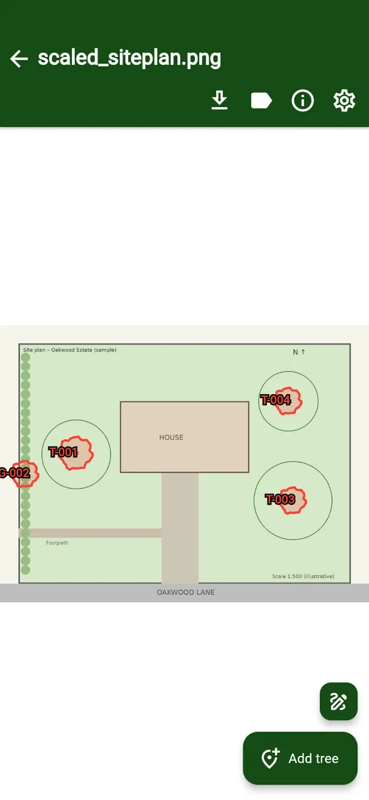
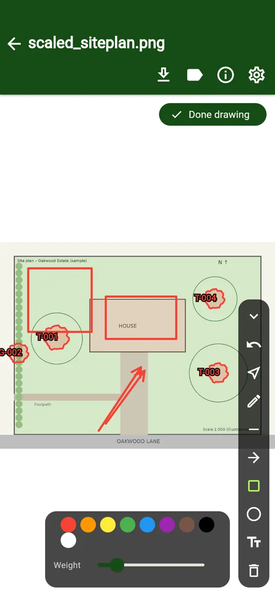
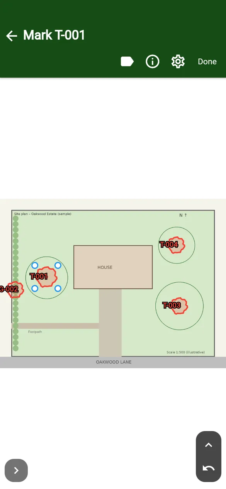

User guides › Map, pins and drawing tools
Map, pins and drawing tools
Attach a site plan, pin trees with different styles, move and resize pins, and draw on the plan.
Each project can have a site plan (an image of the site). You pin trees on it, and you can draw lines, arrows, shapes and text on it.
Attach a map
- Open Project settings.
- Tap Attach map and choose an image of the site plan.
- Use Add another map if the site needs more than one plan. The swap and bin icons replace or remove a map.
Pin a tree
- On the tree form tap Open map (or tap the Map icon on the tree’s row).
- Choose a pin style from the left rail: Pin, Rectangle, Oval, CAD circle, CAD tree, Dot or Star. CAD circle and CAD tree are Pro styles.
- Pick a colour, choose Fill or outline, and set Weight and ID size.
- Tap the plan where the tree is. Drag the corner handles to resize the pin (for example to match the crown spread).
- Tap Done. The form now says Marked on project map.



On the right rail: Hide tools, Undo, Pin and Remove pin. The label icon at the top hides or shows ID labels.
The project map
Tap the map icon on the tree list toolbar to see every pinned tree.
- Zoom: pinch, or use the side slider. Drag to pan.
- Tap a pin to open that tree’s form.
- Long-press a pin to pick it up, then drag it to move it or use the corner handles to resize it. Tap empty map to finish.
- Add tree, then tap the map where the tree is. Its form opens straight away.
- Download maps exports the plan with the pins.



Drawing tools
Tap Draw on the project map to show the drawing tools, and Done drawing to hide them again.
| Tool | Use |
|---|---|
| Select | Tap a shape to select it; then move it or delete it. |
| Pen | Freehand line. |
| Line / Arrow | Drag from start to end. |
| Box / Circle | Drag to draw the shape. |
| Text | Tap where the label should go and type. |
| Undo / Delete selected | Undo the last change, or delete the selected shape. |
Pick the colour and line weight at the bottom before you draw.